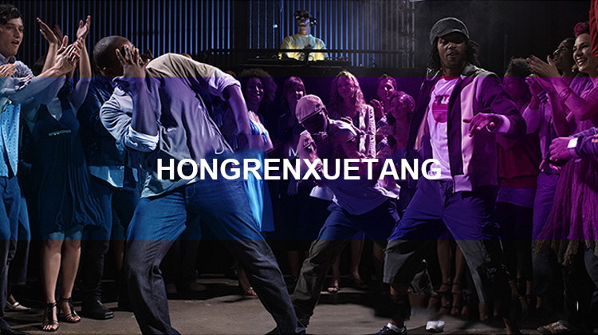

小说第29期：欧洲尽头爱尔兰（一）好久与好人

在产品设计逻辑上，微信小程序较为专注，简约、直观，只提供了搜索功能及竖排的最近使用小程序列表，更加照顾用户体验。而支付宝小程序的功能性更复杂，商业属性更强。支付宝小程序与微信最大的不同，就是初始“展示”了20款不可删除的小程序。

自8月份开始公测以来，支付宝小程序又经历了两个月的打磨，相信最终选择商业属性的路径，也是经过深思熟虑。因为刚刚推出，进驻支付宝的小程序数目还比较有限。对于商家而言，除了双方集团内的公司，支付宝和微信的小程序不排他，同时进驻两个平台无疑是最优解。下一步，就是看用户能否买单。